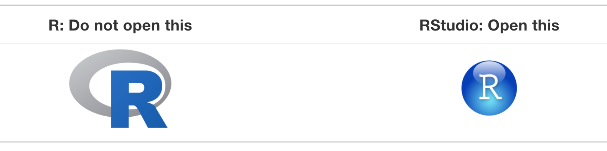
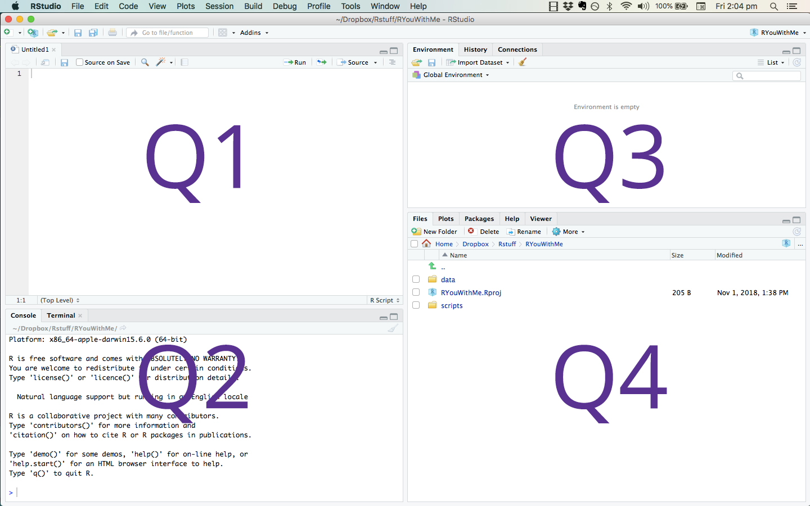
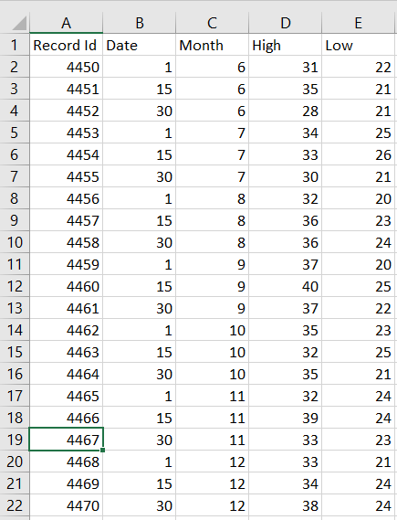
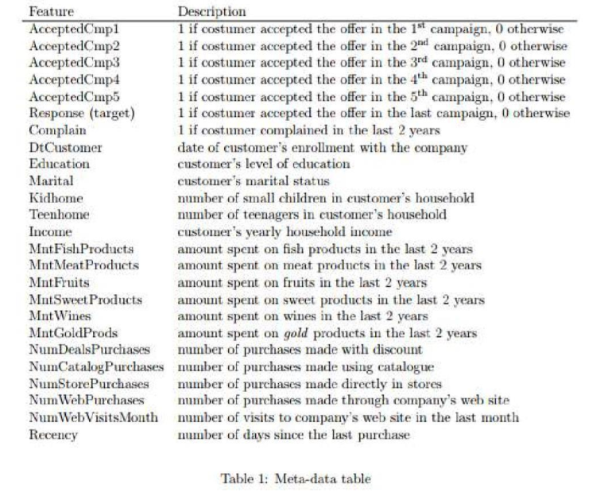
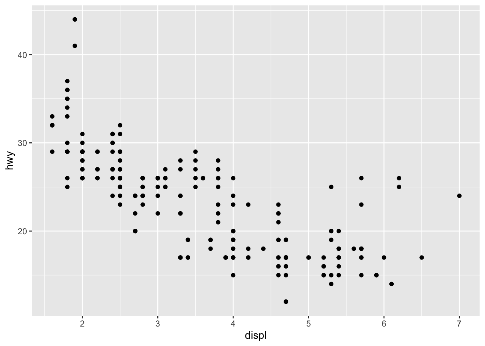

1 / 200 * 30
#> [1] 0.15
(59 + 73 + 2) / 3
#> [1] 44.66667
sin(pi / 2)
#> [1] 1Introduction to R
Basic R Programming
Setting Up Your Environment
Before getting started we will need to install R and RStudio.
Installing R
We can download R from CRAN, the comprehensive R archive network. CRAN is a server used to distribute R and R packages. If you don’t have R installed already you can do so here.
Installing RStudio
With R installed, let’s go ahead and install RStudio. RStudio is a convenient IDE (integrated development environment) for R programming. Download and install the RStudio Desktop client.
Helpful Links
From the RStudio Education page:
For beginner-friendly installation instructions, we recommend the free online ModernDive chapter Getting Started with R and RStudio. You may also enjoy the Basic Basics lesson unit from R-Ladies Sydney, which provides an opinionated tour of RStudio for new users and a step-by-step guide to installing and using R packages.
Difference between R and RStudio
For those of you who may be unfamiliar with using an IDE, RStudio is simply a convenient way for us to interact with R. You can think of R as the engine, powering the car, and RStudio as the controls and dashboard for driving. For 559, we won’t interact directly with R very often, instead we will work with R directly from RStudio.

Interacting with RStudio
After opening RStudio you will see something similar to the image below, where the application is divided into different panes. Each pane serves a different purpose:
Q1: contains scripts you are working from and sometimes data views
Q2: the console where you run the code
Q3: the environment page, code history, and build tools
Q4: files, plots, packages, help documentation

Coding in RStudio
Let’s begin by using the Console to interact with R.
Using R as a Calculator
We can use R as a basic calculator.
Creating New Objects
We can create new object using the assignment operator <- as follows:
x <- 3 * 4
secret_password <- "password1234"In R, object names are case sensitive, must start with a letter and can contain numbers, letters, underscores and periods.
You can look at objects by typing their name into the console:
x[1] 12secret_password[1] "password1234"If you type an object that hasn’t been defined yet you will get an error. For example,
Secret_PasswordError: object 'Secret_Password' not foundCalling Functions in R
R has many built-in functions and you can also create your own. Functions can be used to perform tasks in R. They take arguments as inputs, and return outputs. Often you will supply arguments to a function, and it is also possible to use a function’s default values.
For example, there is a function in R called seq(from, to) that creates a sequence of numbers starting at from and ending at to. For example, if we want a sequences of numbers from = 10 all the way to = 20:
# you can add comments to your code using the # key
# anything after the # will not be run as code
# note the code below is equivalent to seq(10, 20)
seq(from = 10, to = 20) [1] 10 11 12 13 14 15 16 17 18 19 20If you want to better understand what a specific function in R does you can always look to the documentation by typing a question mark before the function name in the R console, for example ?seq or ?rep.
?seqAdding Comments to Your Code
It is good practice to add comments to your code. These comments can help others understand what you are doing, and more importantly, they will help you remember what you did. How to effectively use comments is part of a larger discussion on how to write effective and understandable code, and if you’re interested take a look at different style guides for R.
# you can add comments to your code using the # key
# anything after the # will not be run as code
#
# note: the code below is equivalent to seq(10, 20)
seq(from = 10, to = 20) [1] 10 11 12 13 14 15 16 17 18 19 20Common Data Types in R
Four of the most common data types used in R are discussed below:
Numeric: The most common data type in R is numeric. A variable or a series will be stored as numeric data if the values are numbers or if the values contains decimals. For example, the following two series are stored as numeric by default:
# numeric series without decimals num_data <- c(3, 7, 2) num_data[1] 3 7 2class(num_data)[1] "numeric"# numeric series with decimals num_data_dec <- c(3.4, 7.1, 2.9) num_data_dec[1] 3.4 7.1 2.9class(num_data_dec)[1] "numeric"Character: The data type character is used when storing text, known as strings in R. The simplest ways to store data under the character format is by using
""around the piece of text:char <- "some text" char[1] "some text"class(char)[1] "character"Factor: Factor variables are a special case of character variables in the sense that it also contains text. However, factor variables are used when there are a limited number of unique character strings. It often represents a categorical variable.
text <- c("test1", "test2", "test1", "test1") # create a character vector class(text) # to know the class[1] "character"text_factor <- as.factor(text) # transform to factor class(text_factor) # recheck the class[1] "factor"Logical: A logical variable is a variable with only two values;
TRUEorFALSEvalue1 <- 7 value2 <- 9 # is value1 greater than value2? greater <- value1 > value2 greater[1] FALSEclass(greater)[1] "logical"
These are four common R data types you’ll see in this class. There are others not listed here. For more detailed descriptions of data types in R there are a number of helpful resources available online, including this discussion of data structures.
Making Decisions with ifelse()
Often we want R to choose between two values based on a condition, such as labeling cases as “high” or “low” on some variable. The ifelse() function does this for an entire vector at once, following the pattern ifelse(condition, value_if_true, value_if_false):
scores <- c(12, 31, 25, 8, 19)
ifelse(scores > 20, "high", "low")[1] "low" "high" "high" "low" "low" Each element is checked against the condition and replaced with the appropriate label. This vectorized style is how we’ll create binary features and recode variables all semester, so it’s worth internalizing now.
ifelse() also works with numbers. For example, converting scores to a 0/1 indicator:
ifelse(scores > 20, 1, 0)[1] 0 1 1 0 0A related tool you may know from other languages: R also has if (condition) { ... } else { ... } blocks, which choose between two chunks of code rather than two values, and operate on a single condition rather than a whole vector. We’ll see them occasionally, but in data analysis ifelse() is the one you’ll reach for constantly.
x <- 3
if (x > 6) {
print("x is greater than 6")
} else {
print("x is less than or equal to 6")
}[1] "x is less than or equal to 6"R Packages
Installing R Packages
One of the main reasons to be excited about R is the package library system. In R, packages are like apps. R packages extend the functionality of base R by providing additional functions, data, and documentation. They are written by a worldwide community of R users and can be downloaded freely without much hassle (compared to many other package libraries). For example, we will often use the ggplot2 package for plotting and visualizing data and the psych package for describing data numerically.
To install R packages you can use the install.packages() function directly in the console as follows:
install.packages("ggplot2")or you can do so from the Packages tab of the Files pane in RStudio using the following steps:
Click on the “Packages” tab.
Click on “Install” next to Update.
Type the name of the package under “Packages (separate multiple with space or comma):” In this case, type
ggplot2.Click “Install.”

Using R Packages
Once a package is installed you can load it into your environment using the library() function. Once loaded you have access to all the R functions supplied by that package.
library("ggplot2")Finding Useful R Packages
There are many ways to find useful R packages on the internet simply by googling the type of data or analysis you are interested in. Another way is to look at the CRAN Task Views. For example, there is an interesting Task View for Machine Learning that contains many relevant packages you might be interested in using. Some class members expressed interest in F1 racing. In the Sports Analytics Task View there is a f1dataR package that provides historical data from the beginning of Formula 1.
Reading in Data
Loading Data
One of the most important initial tasks you’ll face in R is reading in data. Let’s walk through some basics.
By reading in data we are generally referring to the process of importing data from a local directory on your computer, or from the web, into R. When we read a data file into R, we often read it in as a tabular object where columns represent variables and rows represent cases. This is not always the case but covers the most basic use case.

Many different data file formats can be read into R as data frames, such as .csv (comma separated values), .xlsx (Excel workbook), .txt (text), .sas7bdat (SAS), and .sav (SPSS) can be read into R. We will mostly focus on the .csv case in this class.
TipDownload the Data
The examples in this section use a marketing dataset. Download it here: ifood_df.csv (right-click → “Save Link As…” if it opens in your browser). Save it in the same folder where you keep your R scripts for this class.
Where Is Your Data File? Paths in R
To read a file into R, R needs to know where the file lives on your computer. The most explicit way to say so is a full path: the complete address of the file, starting from the root of your hard drive. For example, on my computer the path to the marketing data looks like this:
df <- read.csv("/Users/zacharyfisher/Dropbox/GitHub/proj_559/PSYC559-Site/data/ifood_df.csv")Your path will look different, since it depends on your username, operating system, and where you saved the file. A convenient way to find a file’s full path is with file.choose(), which opens a file picker and prints the path of whatever you select:
file.choose()A Better Habit: Keep Data Next to Your Script
Full paths work, but they are fragile: the code breaks the moment a folder gets moved or renamed, and it can never run on anyone else’s computer (including mine, when I am trying to help you debug or grade your work).
The habit we will use in this class: keep your data file in the same folder as the script (or R Markdown document) that uses it, and refer to the file by name:
df <- read.csv("data/ifood_df.csv")This is called a relative path: R looks for the file relative to where it is currently working. When you knit an R Markdown document, R automatically works from the folder where the .Rmd file lives, so if the data sits next to your document (or in a data/ subfolder, as above), everything just works on your machine, on your groupmate’s, and on mine.
If you are working in a plain R script and R can’t find your file, check where R is currently looking with:
getwd()and make sure your data is in that folder (or open your script through RStudio’s File menu, which usually sets things up correctly).
Looking at the Data
Once the .csv file is loaded you can look at it using the View() function
View(df)or simply examine the first few cases using head()
head(df) Income Kidhome Teenhome Recency MntWines MntFruits MntMeatProducts
1 58138 0 0 58 635 88 546
2 46344 1 1 38 11 1 6
3 71613 0 0 26 426 49 127
4 26646 1 0 26 11 4 20
5 58293 1 0 94 173 43 118
6 62513 0 1 16 520 42 98
MntFishProducts MntSweetProducts MntGoldProds NumDealsPurchases
1 172 88 88 3
2 2 1 6 2
3 111 21 42 1
4 10 3 5 2
5 46 27 15 5
6 0 42 14 2
NumWebPurchases NumCatalogPurchases NumStorePurchases NumWebVisitsMonth
1 8 10 4 7
2 1 1 2 5
3 8 2 10 4
4 2 0 4 6
5 5 3 6 5
6 6 4 10 6
AcceptedCmp3 AcceptedCmp4 AcceptedCmp5 AcceptedCmp1 AcceptedCmp2 Complain
1 0 0 0 0 0 0
2 0 0 0 0 0 0
3 0 0 0 0 0 0
4 0 0 0 0 0 0
5 0 0 0 0 0 0
6 0 0 0 0 0 0
Z_CostContact Z_Revenue Response Age Customer_Days marital_Divorced
1 3 11 1 63 2822 0
2 3 11 0 66 2272 0
3 3 11 0 55 2471 0
4 3 11 0 36 2298 0
5 3 11 0 39 2320 0
6 3 11 0 53 2452 0
marital_Married marital_Single marital_Together marital_Widow
1 0 1 0 0
2 0 1 0 0
3 0 0 1 0
4 0 0 1 0
5 1 0 0 0
6 0 0 1 0
education_2n.Cycle education_Basic education_Graduation education_Master
1 0 0 1 0
2 0 0 1 0
3 0 0 1 0
4 0 0 1 0
5 0 0 0 0
6 0 0 0 1
education_PhD MntTotal MntRegularProds AcceptedCmpOverall
1 0 1529 1441 0
2 0 21 15 0
3 0 734 692 0
4 0 48 43 0
5 1 407 392 0
6 0 702 688 0Working with Data Frames
Data Frames
Nearly everything we do this semester will start with a data frame: a rectangular table where each row is a case (a person, a customer, a house) and each column is a variable. In this section we’ll practice pulling pieces out of a data frame, creating new variables, and chaining operations together. These are the skills you’ll use in every single lab and assignment.
Let’s read in the marketing data we saw previously (download: ifood_df.csv).
df <- read.csv("data/ifood_df.csv")A few functions are useful for getting oriented whenever you load a new dataset:
dim(df) # number of rows and columns[1] 2205 39nrow(df) # number of rows (cases)[1] 2205names(df) # variable names [1] "Income" "Kidhome" "Teenhome"
[4] "Recency" "MntWines" "MntFruits"
[7] "MntMeatProducts" "MntFishProducts" "MntSweetProducts"
[10] "MntGoldProds" "NumDealsPurchases" "NumWebPurchases"
[13] "NumCatalogPurchases" "NumStorePurchases" "NumWebVisitsMonth"
[16] "AcceptedCmp3" "AcceptedCmp4" "AcceptedCmp5"
[19] "AcceptedCmp1" "AcceptedCmp2" "Complain"
[22] "Z_CostContact" "Z_Revenue" "Response"
[25] "Age" "Customer_Days" "marital_Divorced"
[28] "marital_Married" "marital_Single" "marital_Together"
[31] "marital_Widow" "education_2n.Cycle" "education_Basic"
[34] "education_Graduation" "education_Master" "education_PhD"
[37] "MntTotal" "MntRegularProds" "AcceptedCmpOverall" head(df[, 1:6]) # first few rows of the first 6 columns Income Kidhome Teenhome Recency MntWines MntFruits
1 58138 0 0 58 635 88
2 46344 1 1 38 11 1
3 71613 0 0 26 426 49
4 26646 1 0 26 11 4
5 58293 1 0 94 173 43
6 62513 0 1 16 520 42Selecting a Variable with $
The $ operator pulls a single variable out of a data frame as a vector. This is one of the most common operations in R, and you will see it constantly in this course.
mean(df$Income) # average household income[1] 51622.09table(df$Complain) # how many customers lodged a complaint?
0 1
2185 20 We can also use $ to create a new variable in the data frame. For example, the number of children at home is split across two variables, Kidhome and Teenhome. Let’s combine them:
df$TotalKids <- df$Kidhome + df$Teenhome
table(df$TotalKids)
0 1 2 3
628 1112 415 50 Subsetting with [rows, columns]
Square brackets let us take a subset of a data frame using the pattern df[rows, columns]. Leaving either slot empty means “keep everything.”
df[1:5, ] # first five rows, all columns Income Kidhome Teenhome Recency MntWines MntFruits MntMeatProducts
1 58138 0 0 58 635 88 546
2 46344 1 1 38 11 1 6
3 71613 0 0 26 426 49 127
4 26646 1 0 26 11 4 20
5 58293 1 0 94 173 43 118
MntFishProducts MntSweetProducts MntGoldProds NumDealsPurchases
1 172 88 88 3
2 2 1 6 2
3 111 21 42 1
4 10 3 5 2
5 46 27 15 5
NumWebPurchases NumCatalogPurchases NumStorePurchases NumWebVisitsMonth
1 8 10 4 7
2 1 1 2 5
3 8 2 10 4
4 2 0 4 6
5 5 3 6 5
AcceptedCmp3 AcceptedCmp4 AcceptedCmp5 AcceptedCmp1 AcceptedCmp2 Complain
1 0 0 0 0 0 0
2 0 0 0 0 0 0
3 0 0 0 0 0 0
4 0 0 0 0 0 0
5 0 0 0 0 0 0
Z_CostContact Z_Revenue Response Age Customer_Days marital_Divorced
1 3 11 1 63 2822 0
2 3 11 0 66 2272 0
3 3 11 0 55 2471 0
4 3 11 0 36 2298 0
5 3 11 0 39 2320 0
marital_Married marital_Single marital_Together marital_Widow
1 0 1 0 0
2 0 1 0 0
3 0 0 1 0
4 0 0 1 0
5 1 0 0 0
education_2n.Cycle education_Basic education_Graduation education_Master
1 0 0 1 0
2 0 0 1 0
3 0 0 1 0
4 0 0 1 0
5 0 0 0 0
education_PhD MntTotal MntRegularProds AcceptedCmpOverall TotalKids
1 0 1529 1441 0 0
2 0 21 15 0 2
3 0 734 692 0 0
4 0 48 43 0 1
5 1 407 392 0 1head(df[, c("Income", "Age")]) # all rows, two named columns Income Age
1 58138 63
2 46344 66
3 71613 55
4 26646 36
5 58293 39
6 62513 53We can also select rows using a logical condition. For example, customers with incomes above $75,000:
high_income <- df[df$Income > 75000, ]
nrow(high_income)[1] 350Read that as: “keep the rows of df where df$Income > 75000 is TRUE, and all columns.”
Missing Values: NA
Real data is rarely complete. R represents a missing value with NA (“not available”), and NA behaves differently than you might expect: most computations involving a missing value return a missing value.
x <- c(4, 7, NA, 2)
mean(x)[1] NAThat NA answer is R being honest: it can’t know the mean of numbers it doesn’t have. If you’ve decided that ignoring the missing values is appropriate, say so explicitly with na.rm = TRUE:
mean(x, na.rm = TRUE)[1] 4.333333To find missing values, use is.na(). Asking x == NA does not work, because comparing anything to an unknown is also unknown:
is.na(x) # which entries are missing?[1] FALSE FALSE TRUE FALSEsum(is.na(x)) # how many are missing?[1] 1For a whole data frame, colSums(is.na(df)) shows the missing count per variable. Our marketing data happens to be a cleaned dataset:
sum(is.na(df)) # no missing values here[1] 0Real psychological data will rarely be this kind; the General Social Survey data in your first assignment certainly won’t be. Handling missingness well is a modeling topic we’ll treat properly in the feature engineering unit; for now, the essential skills are noticing missing values and understanding why NAs propagate through your calculations.
The Pipe Operator %>%
As our analyses grow, we often want to perform several operations in sequence. The pipe operator %>% takes the object on its left and passes it to the function on its right. These two lines do exactly the same thing:
library(dplyr)
head(df[, 1:4]) # without the pipe Income Kidhome Teenhome Recency
1 58138 0 0 58
2 46344 1 1 38
3 71613 0 0 26
4 26646 1 0 26
5 58293 1 0 94
6 62513 0 1 16df[, 1:4] %>% head() # with the pipe Income Kidhome Teenhome Recency
1 58138 0 0 58
2 46344 1 1 38
3 71613 0 0 26
4 26646 1 0 26
5 58293 1 0 94
6 62513 0 1 16That looks like a small change, but pipes let us read a chain of steps top-to-bottom like a recipe, instead of inside-out. You will see %>% throughout the course materials, especially once we start building preprocessing and modeling pipelines.
Note: newer versions of R also have a built-in pipe written |>. It works the same way for our purposes, and you may see either form in the wild.
Data Wrangling with dplyr
The dplyr package (loaded above) provides a set of verbs for working with data frames that pair naturally with the pipe. The four you’ll see most often:
select(): choose columnsfilter(): choose rows matching a conditionmutate(): create new variablessummarise(): collapse rows into summary values (often withgroup_by())
df %>% select(Income, Age, MntWines) %>% head() Income Age MntWines
1 58138 63 635
2 46344 66 11
3 71613 55 426
4 26646 36 11
5 58293 39 173
6 62513 53 520df %>% filter(Income > 75000) %>% nrow()[1] 350df %>%
mutate(TotalKids = Kidhome + Teenhome) %>%
select(Income, TotalKids) %>%
head() Income TotalKids
1 58138 0
2 46344 2
3 71613 0
4 26646 1
5 58293 1
6 62513 1Chaining verbs together is where this style shines. For example: among customers who did and did not complain, what is the average wine spending and group size?
df %>%
group_by(Complain) %>%
summarise(
avg_wine = mean(MntWines),
n = n()
)# A tibble: 2 × 3
Complain avg_wine n
<int> <dbl> <int>
1 0 307. 2185
2 1 177. 20Two Dialects, One Language
Base R subsetting ($, [ , ]) and dplyr verbs are two ways of doing the same things, and this course uses both: base R for quick one-liners, dplyr chains for multi-step preprocessing. You should be comfortable reading both. When writing your own code, use whichever feels clearer to you.
Describing Data Numerically
Numerical Summaries of Data Frames
Once you have read in a data frame it can be useful to know how the variables are understood by R. For example, let’s look at some Kaggle Marketing Analytics Data. You can download the raw data here.

Read in Marketing Data
Let’s read in the data using the read.csv() function. (If you don’t have the file yet, download it here: ifood_df.csv, and remember our habit: keep it next to your script.)
df <- read.csv("data/ifood_df.csv")Install and Load psych Package
Once we know the data has been read into R we can look at how R understands the data file using the structure function str()
str(df)'data.frame': 2205 obs. of 39 variables:
$ Income : num 58138 46344 71613 26646 58293 ...
$ Kidhome : int 0 1 0 1 1 0 0 1 1 1 ...
$ Teenhome : int 0 1 0 0 0 1 1 0 0 1 ...
$ Recency : int 58 38 26 26 94 16 34 32 19 68 ...
$ MntWines : int 635 11 426 11 173 520 235 76 14 28 ...
$ MntFruits : int 88 1 49 4 43 42 65 10 0 0 ...
$ MntMeatProducts : int 546 6 127 20 118 98 164 56 24 6 ...
$ MntFishProducts : int 172 2 111 10 46 0 50 3 3 1 ...
$ MntSweetProducts : int 88 1 21 3 27 42 49 1 3 1 ...
$ MntGoldProds : int 88 6 42 5 15 14 27 23 2 13 ...
$ NumDealsPurchases : int 3 2 1 2 5 2 4 2 1 1 ...
$ NumWebPurchases : int 8 1 8 2 5 6 7 4 3 1 ...
$ NumCatalogPurchases : int 10 1 2 0 3 4 3 0 0 0 ...
$ NumStorePurchases : int 4 2 10 4 6 10 7 4 2 0 ...
$ NumWebVisitsMonth : int 7 5 4 6 5 6 6 8 9 20 ...
$ AcceptedCmp3 : int 0 0 0 0 0 0 0 0 0 1 ...
$ AcceptedCmp4 : int 0 0 0 0 0 0 0 0 0 0 ...
$ AcceptedCmp5 : int 0 0 0 0 0 0 0 0 0 0 ...
$ AcceptedCmp1 : int 0 0 0 0 0 0 0 0 0 0 ...
$ AcceptedCmp2 : int 0 0 0 0 0 0 0 0 0 0 ...
$ Complain : int 0 0 0 0 0 0 0 0 0 0 ...
$ Z_CostContact : int 3 3 3 3 3 3 3 3 3 3 ...
$ Z_Revenue : int 11 11 11 11 11 11 11 11 11 11 ...
$ Response : int 1 0 0 0 0 0 0 0 1 0 ...
$ Age : int 63 66 55 36 39 53 49 35 46 70 ...
$ Customer_Days : int 2822 2272 2471 2298 2320 2452 2752 2576 2547 2267 ...
$ marital_Divorced : int 0 0 0 0 0 0 1 0 0 0 ...
$ marital_Married : int 0 0 0 0 1 0 0 1 0 0 ...
$ marital_Single : int 1 1 0 0 0 0 0 0 0 0 ...
$ marital_Together : int 0 0 1 1 0 1 0 0 1 1 ...
$ marital_Widow : int 0 0 0 0 0 0 0 0 0 0 ...
$ education_2n.Cycle : int 0 0 0 0 0 0 0 0 0 0 ...
$ education_Basic : int 0 0 0 0 0 0 0 0 0 0 ...
$ education_Graduation: int 1 1 1 1 0 0 1 0 0 0 ...
$ education_Master : int 0 0 0 0 0 1 0 0 0 0 ...
$ education_PhD : int 0 0 0 0 1 0 0 1 1 1 ...
$ MntTotal : int 1529 21 734 48 407 702 563 146 44 36 ...
$ MntRegularProds : int 1441 15 692 43 392 688 536 123 42 23 ...
$ AcceptedCmpOverall : int 0 0 0 0 0 0 0 0 0 1 ...The psych package in R provides some useful function for describing data. Let’s install psyc, load the package, and look at our data.
install.packages("psych") # install the packagelibrary("psych") # load the libraryDescribe the Data
Now let’s use the describe() function from psych to look at our marketing data.
describe(df) # describe our marketing data vars n mean sd median trimmed mad min
Income 1 2205 51622.09 20713.06 51287 51625.17 24408.04 1730
Kidhome 2 2205 0.44 0.54 0 0.40 0.00 0
Teenhome 3 2205 0.51 0.54 0 0.48 0.00 0
Recency 4 2205 49.01 28.93 49 49.00 37.06 0
MntWines 5 2205 306.16 337.49 178 251.45 249.08 0
MntFruits 6 2205 26.40 39.78 8 17.12 11.86 0
MntMeatProducts 7 2205 165.31 217.78 68 119.54 88.96 0
MntFishProducts 8 2205 37.76 54.82 12 25.31 17.79 0
MntSweetProducts 9 2205 27.13 41.13 8 17.48 11.86 0
MntGoldProds 10 2205 44.06 51.74 25 33.57 28.17 0
NumDealsPurchases 11 2205 2.32 1.89 2 1.97 1.48 0
NumWebPurchases 12 2205 4.10 2.74 4 3.83 2.97 0
NumCatalogPurchases 13 2205 2.65 2.80 2 2.22 2.97 0
NumStorePurchases 14 2205 5.82 3.24 5 5.52 2.97 0
NumWebVisitsMonth 15 2205 5.34 2.41 6 5.41 2.97 0
AcceptedCmp3 16 2205 0.07 0.26 0 0.00 0.00 0
AcceptedCmp4 17 2205 0.07 0.26 0 0.00 0.00 0
AcceptedCmp5 18 2205 0.07 0.26 0 0.00 0.00 0
AcceptedCmp1 19 2205 0.06 0.25 0 0.00 0.00 0
AcceptedCmp2 20 2205 0.01 0.12 0 0.00 0.00 0
Complain 21 2205 0.01 0.09 0 0.00 0.00 0
Z_CostContact 22 2205 3.00 0.00 3 3.00 0.00 3
Z_Revenue 23 2205 11.00 0.00 11 11.00 0.00 11
Response 24 2205 0.15 0.36 0 0.06 0.00 0
Age 25 2205 51.10 11.71 50 51.04 13.34 24
Customer_Days 26 2205 2512.72 202.56 2515 2513.15 259.46 2159
marital_Divorced 27 2205 0.10 0.31 0 0.01 0.00 0
marital_Married 28 2205 0.39 0.49 0 0.36 0.00 0
marital_Single 29 2205 0.22 0.41 0 0.15 0.00 0
marital_Together 30 2205 0.26 0.44 0 0.20 0.00 0
marital_Widow 31 2205 0.03 0.18 0 0.00 0.00 0
education_2n.Cycle 32 2205 0.09 0.29 0 0.00 0.00 0
education_Basic 33 2205 0.02 0.15 0 0.00 0.00 0
education_Graduation 34 2205 0.50 0.50 1 0.51 0.00 0
education_Master 35 2205 0.17 0.37 0 0.08 0.00 0
education_PhD 36 2205 0.22 0.41 0 0.15 0.00 0
MntTotal 37 2205 562.76 575.94 343 482.34 459.61 4
MntRegularProds 38 2205 518.71 553.85 288 436.84 400.30 -283
AcceptedCmpOverall 39 2205 0.30 0.68 0 0.13 0.00 0
max range skew kurtosis se
Income 113734 112004 0.01 -0.85 441.10
Kidhome 2 2 0.63 -0.79 0.01
Teenhome 2 2 0.40 -0.99 0.01
Recency 99 99 0.00 -1.20 0.62
MntWines 1493 1493 1.17 0.57 7.19
MntFruits 199 199 2.10 4.03 0.85
MntMeatProducts 1725 1725 1.82 3.23 4.64
MntFishProducts 259 259 1.91 3.04 1.17
MntSweetProducts 262 262 2.10 4.06 0.88
MntGoldProds 321 321 1.83 3.13 1.10
NumDealsPurchases 15 15 2.31 8.16 0.04
NumWebPurchases 27 27 1.20 4.08 0.06
NumCatalogPurchases 28 28 1.37 3.19 0.06
NumStorePurchases 13 13 0.71 -0.64 0.07
NumWebVisitsMonth 20 20 0.23 1.89 0.05
AcceptedCmp3 1 1 3.25 8.60 0.01
AcceptedCmp4 1 1 3.24 8.52 0.01
AcceptedCmp5 1 1 3.28 8.76 0.01
AcceptedCmp1 1 1 3.55 10.58 0.01
AcceptedCmp2 1 1 8.39 68.45 0.00
Complain 1 1 10.35 105.16 0.00
Z_CostContact 3 0 NaN NaN 0.00
Z_Revenue 11 0 NaN NaN 0.00
Response 1 1 1.95 1.80 0.01
Age 80 56 0.09 -0.80 0.25
Customer_Days 2858 699 -0.02 -1.20 4.31
marital_Divorced 1 1 2.59 4.70 0.01
marital_Married 1 1 0.46 -1.79 0.01
marital_Single 1 1 1.38 -0.10 0.01
marital_Together 1 1 1.11 -0.77 0.01
marital_Widow 1 1 5.10 24.02 0.00
education_2n.Cycle 1 1 2.87 6.23 0.01
education_Basic 1 1 6.15 35.82 0.00
education_Graduation 1 1 -0.02 -2.00 0.01
education_Master 1 1 1.80 1.25 0.01
education_PhD 1 1 1.38 -0.09 0.01
MntTotal 2491 2487 0.91 -0.22 12.27
MntRegularProds 2458 2741 0.98 -0.06 11.79
AcceptedCmpOverall 4 4 2.72 7.94 0.01Describe the Data by Group
We may also be interested in describing the data based on a specific grouping factor. For example, let’s look at our summaries based on whether or not a customer has lodged a formal complaint.
describeBy(df, group = "Complain") # describe our marketing data
Descriptive statistics by group
Complain: 0
vars n mean sd median trimmed mad min
Income 1 2185 51676.55 20719.18 51369 51687.17 24529.62 1730
Kidhome 2 2185 0.44 0.54 0 0.40 0.00 0
Teenhome 3 2185 0.51 0.54 0 0.48 0.00 0
Recency 4 2185 48.99 28.95 49 48.98 37.06 0
MntWines 5 2185 307.35 338.23 179 252.68 250.56 0
MntFruits 6 2185 26.42 39.80 8 17.13 11.86 0
MntMeatProducts 7 2185 165.75 218.21 68 119.91 88.96 0
MntFishProducts 8 2185 37.86 54.95 12 25.37 17.79 0
MntSweetProducts 9 2185 27.21 41.21 8 17.55 11.86 0
MntGoldProds 10 2185 44.21 51.81 25 33.74 28.17 0
NumDealsPurchases 11 2185 2.32 1.89 2 1.96 1.48 0
NumWebPurchases 12 2185 4.10 2.74 4 3.83 2.97 0
NumCatalogPurchases 13 2185 2.65 2.80 2 2.22 2.97 0
NumStorePurchases 14 2185 5.83 3.24 5 5.52 2.97 0
NumWebVisitsMonth 15 2185 5.33 2.41 6 5.41 2.97 0
AcceptedCmp3 16 2185 0.07 0.26 0 0.00 0.00 0
AcceptedCmp4 17 2185 0.08 0.26 0 0.00 0.00 0
AcceptedCmp5 18 2185 0.07 0.26 0 0.00 0.00 0
AcceptedCmp1 19 2185 0.06 0.25 0 0.00 0.00 0
AcceptedCmp2 20 2185 0.01 0.12 0 0.00 0.00 0
Complain 21 2185 0.00 0.00 0 0.00 0.00 0
Z_CostContact 22 2185 3.00 0.00 3 3.00 0.00 3
Z_Revenue 23 2185 11.00 0.00 11 11.00 0.00 11
Response 24 2185 0.15 0.36 0 0.06 0.00 0
Age 25 2185 51.09 11.68 50 51.03 13.34 24
Customer_Days 26 2185 2512.02 202.56 2514 2512.30 257.97 2159
marital_Divorced 27 2185 0.10 0.31 0 0.01 0.00 0
marital_Married 28 2185 0.39 0.49 0 0.36 0.00 0
marital_Single 29 2185 0.22 0.41 0 0.14 0.00 0
marital_Together 30 2185 0.26 0.44 0 0.20 0.00 0
marital_Widow 31 2185 0.03 0.18 0 0.00 0.00 0
education_2n.Cycle 32 2185 0.09 0.29 0 0.00 0.00 0
education_Basic 33 2185 0.02 0.16 0 0.00 0.00 0
education_Graduation 34 2185 0.50 0.50 1 0.50 0.00 0
education_Master 35 2185 0.17 0.37 0 0.08 0.00 0
education_PhD 36 2185 0.22 0.41 0 0.15 0.00 0
MntTotal 37 2185 564.58 576.90 344 484.26 461.09 4
MntRegularProds 38 2185 520.37 554.76 288 438.58 400.30 -283
AcceptedCmpOverall 39 2185 0.30 0.68 0 0.14 0.00 0
max range skew kurtosis se
Income 113734 112004 0.01 -0.85 443.25
Kidhome 2 2 0.64 -0.79 0.01
Teenhome 2 2 0.40 -1.00 0.01
Recency 99 99 0.00 -1.20 0.62
MntWines 1493 1493 1.16 0.55 7.24
MntFruits 199 199 2.10 4.05 0.85
MntMeatProducts 1725 1725 1.81 3.22 4.67
MntFishProducts 259 259 1.91 3.03 1.18
MntSweetProducts 262 262 2.09 4.05 0.88
MntGoldProds 321 321 1.83 3.11 1.11
NumDealsPurchases 15 15 2.31 8.15 0.04
NumWebPurchases 27 27 1.20 4.13 0.06
NumCatalogPurchases 28 28 1.37 3.22 0.06
NumStorePurchases 13 13 0.70 -0.64 0.07
NumWebVisitsMonth 20 20 0.24 1.92 0.05
AcceptedCmp3 1 1 3.26 8.64 0.01
AcceptedCmp4 1 1 3.22 8.39 0.01
AcceptedCmp5 1 1 3.27 8.72 0.01
AcceptedCmp1 1 1 3.53 10.44 0.01
AcceptedCmp2 1 1 8.35 67.78 0.00
Complain 0 0 NaN NaN 0.00
Z_CostContact 3 0 NaN NaN 0.00
Z_Revenue 11 0 NaN NaN 0.00
Response 1 1 1.95 1.79 0.01
Age 80 56 0.09 -0.80 0.25
Customer_Days 2858 699 -0.01 -1.20 4.33
marital_Divorced 1 1 2.58 4.65 0.01
marital_Married 1 1 0.46 -1.79 0.01
marital_Single 1 1 1.38 -0.09 0.01
marital_Together 1 1 1.11 -0.77 0.01
marital_Widow 1 1 5.07 23.76 0.00
education_2n.Cycle 1 1 2.88 6.29 0.01
education_Basic 1 1 6.12 35.45 0.00
education_Graduation 1 1 -0.01 -2.00 0.01
education_Master 1 1 1.80 1.23 0.01
education_PhD 1 1 1.37 -0.12 0.01
MntTotal 2491 2487 0.91 -0.23 12.34
MntRegularProds 2458 2741 0.98 -0.07 11.87
AcceptedCmpOverall 4 4 2.71 7.91 0.01
------------------------------------------------------------
Complain: 1
vars n mean sd median trimmed mad min
Income 1 20 45672.40 19618.60 39341.0 44737.81 22307.94 15716
Kidhome 2 20 0.65 0.59 1.0 0.62 0.00 0
Teenhome 3 20 0.55 0.60 0.5 0.50 0.74 0
Recency 4 20 50.75 27.20 48.5 50.62 28.17 8
MntWines 5 20 176.70 211.11 34.0 147.88 48.18 1
MntFruits 6 20 25.10 39.13 6.0 16.31 8.90 0
MntMeatProducts 7 20 117.70 162.23 32.5 85.00 45.96 1
MntFishProducts 8 20 26.70 38.73 6.5 20.50 9.64 0
MntSweetProducts 9 20 18.20 31.36 4.5 11.19 5.93 0
MntGoldProds 10 20 27.60 40.93 13.5 18.00 12.60 2
NumDealsPurchases 11 20 2.40 1.43 2.0 2.19 1.48 1
NumWebPurchases 12 20 3.70 2.96 3.0 3.31 2.22 0
NumCatalogPurchases 13 20 2.10 2.90 0.5 1.56 0.74 0
NumStorePurchases 14 20 5.40 3.60 3.5 4.94 2.22 2
NumWebVisitsMonth 15 20 5.85 2.41 7.0 6.06 1.48 1
AcceptedCmp3 16 20 0.10 0.31 0.0 0.00 0.00 0
AcceptedCmp4 17 20 0.00 0.00 0.0 0.00 0.00 0
AcceptedCmp5 18 20 0.05 0.22 0.0 0.00 0.00 0
AcceptedCmp1 19 20 0.00 0.00 0.0 0.00 0.00 0
AcceptedCmp2 20 20 0.00 0.00 0.0 0.00 0.00 0
Complain 21 20 1.00 0.00 1.0 1.00 0.00 1
Z_CostContact 22 20 3.00 0.00 3.0 3.00 0.00 3
Z_Revenue 23 20 11.00 0.00 11.0 11.00 0.00 11
Response 24 20 0.15 0.37 0.0 0.06 0.00 0
Age 25 20 51.65 15.04 50.0 51.81 17.79 25
Customer_Days 26 20 2588.70 193.28 2685.0 2602.06 164.57 2250
marital_Divorced 27 20 0.05 0.22 0.0 0.00 0.00 0
marital_Married 28 20 0.40 0.50 0.0 0.38 0.00 0
marital_Single 29 20 0.30 0.47 0.0 0.25 0.00 0
marital_Together 30 20 0.25 0.44 0.0 0.19 0.00 0
marital_Widow 31 20 0.00 0.00 0.0 0.00 0.00 0
education_2n.Cycle 32 20 0.15 0.37 0.0 0.06 0.00 0
education_Basic 33 20 0.00 0.00 0.0 0.00 0.00 0
education_Graduation 34 20 0.70 0.47 1.0 0.75 0.00 0
education_Master 35 20 0.10 0.31 0.0 0.00 0.00 0
education_PhD 36 20 0.05 0.22 0.0 0.00 0.00 0
MntTotal 37 20 364.40 424.05 77.5 300.19 101.56 9
MntRegularProds 38 20 336.80 414.50 63.5 271.94 84.51 0
AcceptedCmpOverall 39 20 0.15 0.49 0.0 0.00 0.00 0
max range skew kurtosis se
Income 83257 67541 0.35 -0.97 4386.85
Kidhome 2 2 0.18 -0.93 0.13
Teenhome 2 2 0.50 -0.87 0.14
Recency 93 85 0.11 -1.28 6.08
MntWines 629 628 0.84 -0.88 47.21
MntFruits 137 137 1.58 1.39 8.75
MntMeatProducts 590 589 1.58 1.50 36.28
MntFishProducts 104 104 1.05 -0.69 8.66
MntSweetProducts 107 107 1.74 1.58 7.01
MntGoldProds 176 174 2.48 5.90 9.15
NumDealsPurchases 7 6 1.48 2.74 0.32
NumWebPurchases 11 11 1.01 -0.07 0.66
NumCatalogPurchases 10 10 1.25 0.52 0.65
NumStorePurchases 13 11 0.87 -0.81 0.81
NumWebVisitsMonth 9 8 -0.67 -1.02 0.54
AcceptedCmp3 1 1 2.47 4.32 0.07
AcceptedCmp4 0 0 NaN NaN 0.00
AcceptedCmp5 1 1 3.82 13.29 0.05
AcceptedCmp1 0 0 NaN NaN 0.00
AcceptedCmp2 0 0 NaN NaN 0.00
Complain 1 0 NaN NaN 0.00
Z_CostContact 3 0 NaN NaN 0.00
Z_Revenue 11 0 NaN NaN 0.00
Response 1 1 1.82 1.37 0.08
Age 77 52 -0.02 -1.46 3.36
Customer_Days 2823 573 -0.49 -1.30 43.22
marital_Divorced 1 1 3.82 13.29 0.05
marital_Married 1 1 0.38 -1.95 0.11
marital_Single 1 1 0.81 -1.41 0.11
marital_Together 1 1 1.07 -0.89 0.10
marital_Widow 0 0 NaN NaN 0.00
education_2n.Cycle 1 1 1.82 1.37 0.08
education_Basic 0 0 NaN NaN 0.00
education_Graduation 1 1 -0.81 -1.41 0.11
education_Master 1 1 2.47 4.32 0.07
education_PhD 1 1 3.82 13.29 0.05
MntTotal 1298 1289 0.85 -0.73 94.82
MntRegularProds 1231 1231 0.90 -0.72 92.68
AcceptedCmpOverall 2 2 2.94 7.68 0.11Describing Data Visually
Data Visualization
This section will briefly introduce you to visualizing data using the ggplot2 package. R has a number of systems for making graphs but ggplot2 is by far the most developed option. ggplot2 implements the grammar of graphics, and if you’d like to learn more about the motivation for this work take a look at The Layered Grammar of Graphics.
Install and Load ggplot2 Package
Once we know the data has been read into R we can look at how R understands the data file using the structure function str()
Let’s install ggplot2, and then load the package.
install.packages("ggplot2") # install the packagelibrary("ggplot2") # load the libraryThe mpg Dataset
ggplot2 contains a dataset titled mpg that contains observations collected by the US Environmental Protection Agency on 38 models of car. Let’s look at the dataset using the describe() function.
library("psych") # load the library
describe(mpg) vars n mean sd median trimmed mad min max range
manufacturer* 1 234 7.76 5.13 6.0 7.68 5.93 1.0 15 14.0
model* 2 234 19.09 11.15 18.5 18.98 14.08 1.0 38 37.0
displ 3 234 3.47 1.29 3.3 3.39 1.33 1.6 7 5.4
year 4 234 2003.50 4.51 2003.5 2003.50 6.67 1999.0 2008 9.0
cyl 5 234 5.89 1.61 6.0 5.86 2.97 4.0 8 4.0
trans* 6 234 5.65 2.88 4.0 5.53 1.48 1.0 10 9.0
drv* 7 234 1.67 0.66 2.0 1.59 1.48 1.0 3 2.0
cty 8 234 16.86 4.26 17.0 16.61 4.45 9.0 35 26.0
hwy 9 234 23.44 5.95 24.0 23.23 7.41 12.0 44 32.0
fl* 10 234 4.63 0.70 5.0 4.77 0.00 1.0 5 4.0
class* 11 234 4.59 1.99 5.0 4.64 2.97 1.0 7 6.0
skew kurtosis se
manufacturer* 0.21 -1.63 0.34
model* 0.11 -1.23 0.73
displ 0.44 -0.91 0.08
year 0.00 -2.01 0.29
cyl 0.11 -1.46 0.11
trans* 0.29 -1.65 0.19
drv* 0.48 -0.76 0.04
cty 0.79 1.43 0.28
hwy 0.36 0.14 0.39
fl* -2.25 5.76 0.05
class* -0.14 -1.52 0.13Creating a Basic ggplot
Let’s take a look at two variables in the mpg dataset.
displ, a car’s engine size, in litres.hwy, a car’s fuel efficiency on the highway, in miles per gallon (mpg). A car with a low fuel efficiency consumes more fuel than a car with a high fuel efficiency when they travel the same distance.
To plot mpg, run this code to put displ on the x-axis and hwy on the y-axis:
ggplot(data = mpg) +
geom_point(mapping = aes(x = displ, y = hwy))
We can also convey information about our data by mapping the aesthetics in our plots to the variables in our dataset. For example, we can map the colors of the data points to the class variable to reveal the class of each car.
ggplot(data = mpg) +
geom_point(mapping = aes(x = displ, y = hwy, color = class))
Lastly, we can use facets to split a larger plot into subplots. This can be helpful when we want to break apart our data based on a categorical variable.
ggplot(data = mpg) +
geom_point(mapping = aes(x = displ, y = hwy)) +
facet_wrap(~ class, nrow = 2)
R Markdown and Course Setup
R Markdown
In-class exercises and assignments in this course are distributed as R Markdown (.Rmd) files. An R Markdown file mixes written text with runnable R code. You will complete the code, knit the document into a polished HTML or PDF report, and submit it on Canvas. Learning this workflow now means the first graded exercise will hold no surprises.
Creating an R Markdown Document
In RStudio, choose File > New File > R Markdown…, give it a title, and click OK. RStudio opens a template document you can knit immediately. Try it before changing anything.
The Anatomy of an R Markdown File
An .Rmd file has three ingredients:
The YAML header: the block between
---lines at the very top. It stores the title, author, date, and output format.Prose: ordinary text, with light formatting:
**bold**,*italics*,# headings.Code chunks: R code between
```{r}and```fences. Insert a new chunk with the toolbar button or the shortcut Cmd+Option+I (Mac) / Ctrl+Alt+I (Windows).
You can run a single chunk with the green “play” button on its right edge, which is useful for checking your work as you go.
Knitting
The Knit button at the top of the editor runs the entire document top to bottom in a fresh R session and produces the output file. That “fresh session” detail explains the most common student pitfalls:
“It works in my console but won’t knit.” Objects you created in the console don’t exist when knitting. Every object your document uses must be created by code chunks in the document, in order.
Never put
install.packages()in a code chunk. Install packages once, from the console. A document should load packages withlibrary(), not install them.Keep the
.Rmdand any data files in the same folder, and refer to data by filename (read.csv("mydata.csv")). Knitting looks for files relative to where the.Rmdlives.
One RStudio Setting Worth Changing
By default, RStudio offers to save everything in your environment when you quit and restore it next time. This sounds convenient but causes deeply confusing bugs: objects from last Tuesday silently lurk in your session, your code “works” only because of leftovers, and then it fails to knit. Turn it off now:
Tools > Global Options > General: set “Save workspace to .RData on exit” to Never, and uncheck “Restore .RData into workspace at startup.”
Every session starts clean, which matches how knitting works: if your code runs in a fresh session, it will knit, and it will run for me too. Your scripts and documents are the permanent record of your work, not the workspace.
Reading Error Messages
You will see many error messages this semester; that’s what learning a language looks like. When one appears: read the first line only (the rest is usually internal detail), note which function the error came from, and look for a mention of what R was looking for and couldn’t find (a file, an object, a package). Most errors in this course are one of three things: a typo in a name, a file that isn’t where R is looking, or a package that isn’t loaded. If you’re stuck after checking those, copy the full error message and bring it to class or office hours. “It didn’t work” is unsolvable, but an exact error message usually takes one minute.
Install the Course Packages
Throughout the semester we will lean on a set of R packages for wrangling, visualization, and machine learning. Install them all now by pasting this into your console (not an R Markdown chunk!):
install.packages(c(
"rmarkdown", # writing and knitting R Markdown documents
"knitr", # runs the code inside those documents
"tidyverse", # data wrangling and ggplot2 graphics
"psych", # describing data
"naniar", # exploring missing data
"titanic", # passenger data used in the R Markdown lab
"tidymodels", # modeling framework (includes rsample, recipes)
"caret", # classic ML toolkit
"rpart", # decision trees
"ipred", # bagging
"ranger", # random forests
"gbm", # gradient boosting
"glmnet", # regularized regression
"vip", # variable importance plots
"AmesHousing", # housing data used in the regression unit
"cluster", # clustering methods
"factoextra" # clustering and PCA visualizations
))This can take a while, since tidyverse, tidymodels, and caret are large. Start it, get a coffee, and let it finish. Do this before the first lab so class time isn’t spent watching progress bars.
A few assignment-specific packages (for example, gssr for working with the General Social Survey) will be installed later with instructions provided in the assignment itself.
Check Your Setup
If this runs without errors, you are ready for the semester:
library(tidyverse)
library(tidymodels)
library(caret)
library(psych)
library(rmarkdown)A second check, since every assignment in this course is submitted as a knitted document: in RStudio choose File > New File > R Markdown…, accept the default template, and click Knit. If a formatted document appears, your setup is complete. If RStudio offers to install anything at that point, let it.
If something fails to load, re-run install.packages() for that package and read the error message. If you’re still stuck, bring the error to class or office hours. Getting your machine working is a course goal in week one, not an obstacle.